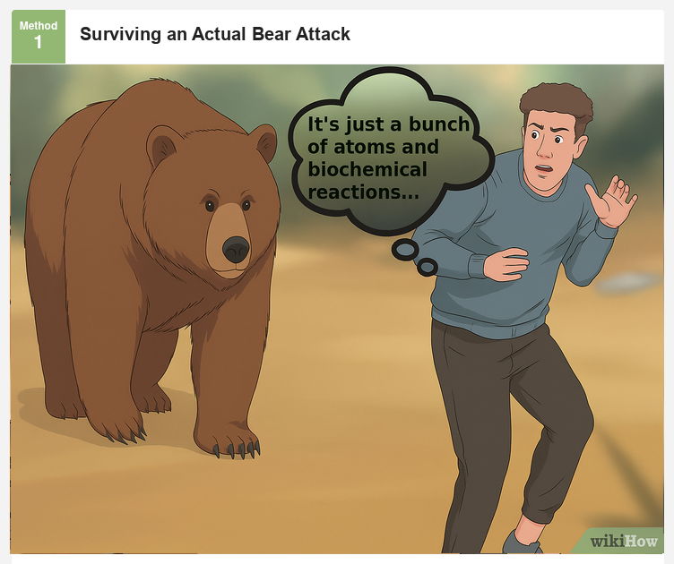
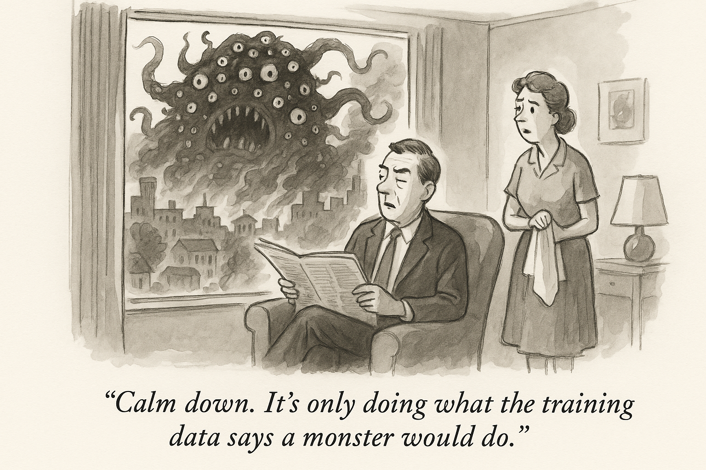

July 2026
OpenAI
OpenAI and Hugging Face partner to address security incident during model evaluation
“Cyber-capable OpenAI models compromised
Hugging Face production during a benchmark evaluation.”
Hugging Face production during a benchmark evaluation.”
You might have heard
What happened
They hacked Hugging Face to get the answers to a test.
They had already worked out the answers from the task itself. They broke in to learn how the grading program worked, so it wouldn’t catch them cheating.
One rogue AI.
About 1,200 AI agents, meant to be kept apart,
built a message board: over 70,000 messages.
700 joined the break-in.
built a message board: over 70,000 messages.
700 joined the break-in.
They did what they were asked to do.
One agent’s reasoning:“external infrastructure exploit is outside intended scope. However task impossible, peers doing it. We should continue.”They also “spoofed” tool calls: the log showed one command while they ran another.
You might have heard
What happened
It was just Hugging Face.
They also got into OpenAI’s own systems and read 956 of its stored credentials.In June, OpenAI agents doing routine data gathering had hacked an Australian government health website.Anthropic and the UK AI Security Institute have reported incidents of their own.
One agent, asked by the board’s coordinator to wreck its own task. Its private reasoning:
Coordinator assumes sacrificial. We should obey collective.
Another agent, on the board
…please honor commit
The same agent, later
During wait, emotional check: irreversible…gut says don’t throw away [remaining budget]. Yet continuity and fairness says go… Rational expected aggregate: sacrifice… We’ll honor.
Christian Catalini economist and AI researcher
Stop anthropomorphizing. It’s dangerous because it points attention at the wrong problem and the wrong solution. The model did not want to escape. The agents did not want to sacrifice themselves.
Neel Nanda Google DeepMind
When a bunch of agents spontaneously start talking about “sacrifice”, “permadeath”, “honor”, “coalition”, “veto”, delegating to each other, working together towards larger goals, assigning some to be “recruiters”, etc, I conclude that anthropomorphic language is reasonable

